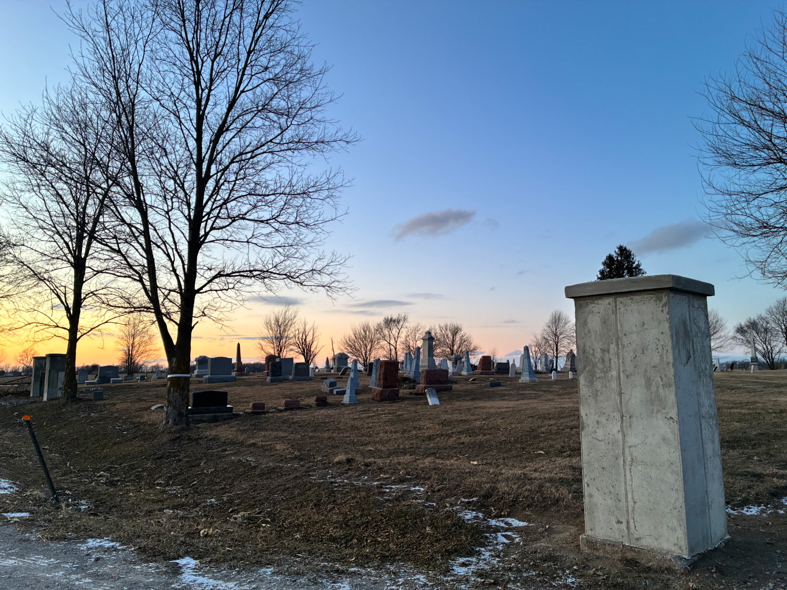
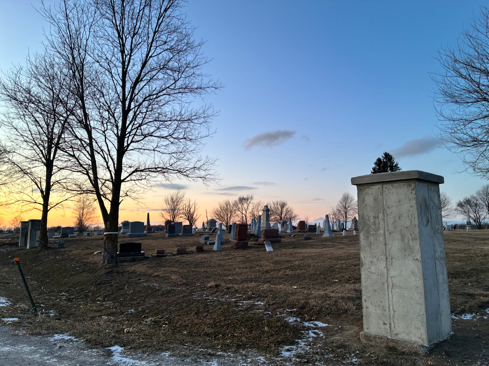
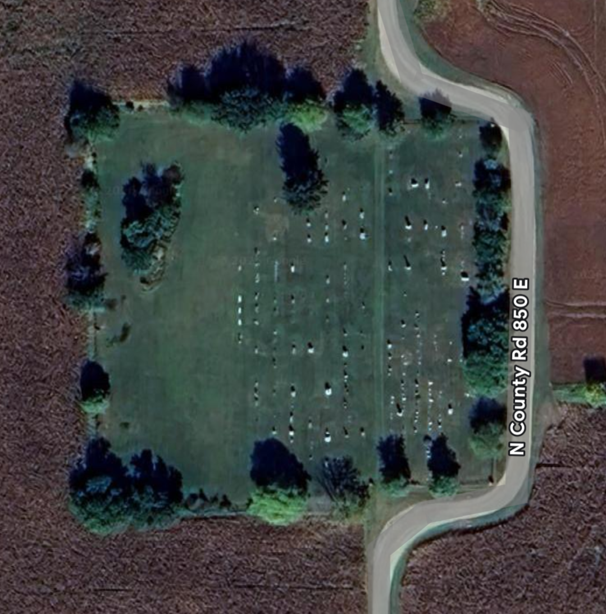
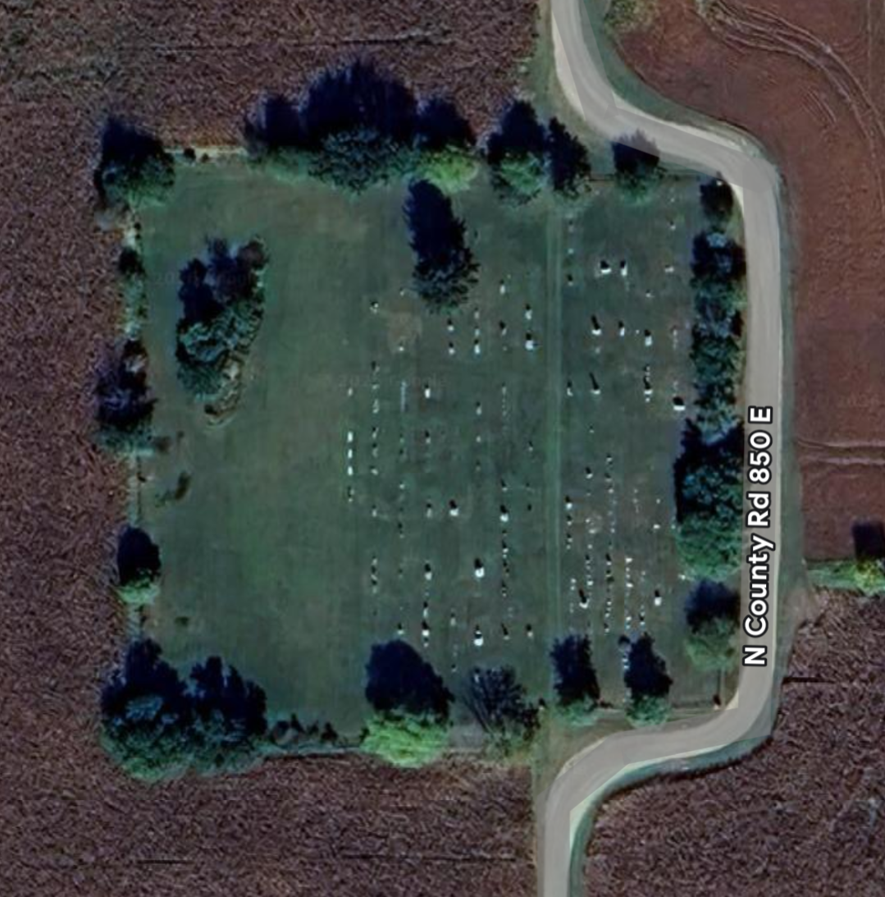

About Union Baptist Cemetery
Union Cemetery has been owned and governed by the Union Baptist Church since 1883, with burial use dating back to 1849. As confirmed by the Clinton County Recorder’s Office, all decisions regarding the cemetery rest solely with the church, which may either continue its long-standing stewardship or transfer ownership through sale. Originally known as Stringer Cemetery, the church later established a perpetual care plan in 1915 to help ensure the cemetery’s long-term preservation.

 


 
